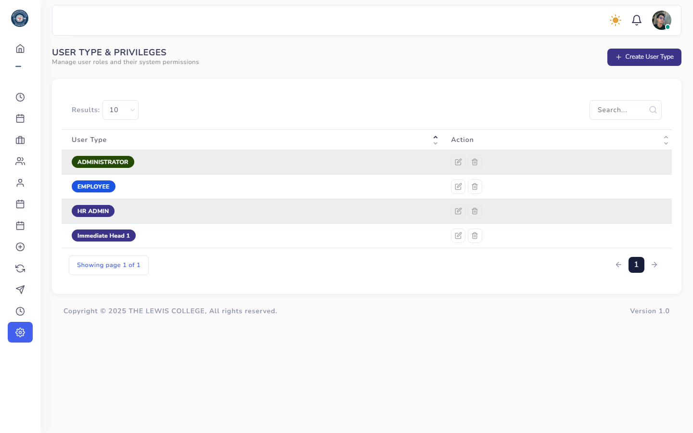
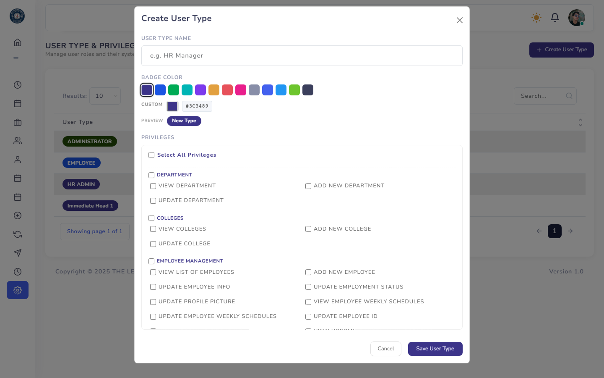
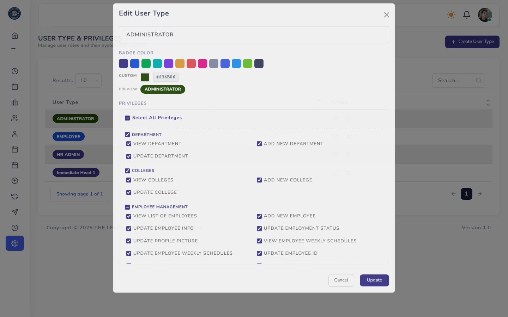

User Types & Permissions
Defines the roles in the system (e.g. HR Admin, Immediate Head, Employee) and exactly which actions each role is allowed to perform.

Display User Types List
All configured roles with Create / Edit / Delete actions.

Add Create User Type
Name the new role and select which system privileges it grants.

Edit Edit Permissions
Adjust which privileges an existing role has, grouped by module (e.g. Company Leaves, Employee Info).
Every menu item and action button in TLC-HRIS is gated by a specific permission string (e.g.
VIEW LEAVE CALENDAR, UPDATE EMPLOYEE INFO). If a page or button seems to be missing for a user, check that their User Type has the corresponding privilege enabled here.
Frequently Asked Questions
Common questions about User Types & Permissions.
Why can't a user see a menu item or button that a coworker has?⌄
Menu items and action buttons are controlled by permissions tied to their User Type. Check their role here and enable the relevant privilege.
How do I create a new role?⌄
Use the Create User Type button, name the role, and check the privileges it should grant, grouped by module.